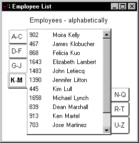

A Tab control is a container for tab pages that display other controls. One page at a time fills the display area of the Tab control. Each page has a tab like an index card divider. The user can click the tab to switch among the pages:

The Tab control allows you to present many pieces of information in an organized way. You add, resize, and move Tab controls just as you do any control. The PowerBuilder User's Guide describes how to add controls to a window or custom visual user object.
You need to know these definitions:
Tab control A control that you place in a window or user object that contains tab pages. Part of the area in the Tab control is for the tabs associated with the tab pages. Any space that is left is occupied by the tab pages themselves.
Tab page A user object that contains other controls and is one of several pages within a Tab control. All the tab pages in a Tab control occupy the same area of the control and only one is visible at a time. The active tab page covers the other tab pages.
You can define tab pages right in the Tab control or you can define them in the User Object painter and insert them into the Tab control, either in the painter or during execution.
Tab The visual handle for a tab page. The tab displays a label for the tab page. When a tab page is hidden, the user clicks its tab to bring it to the front and make the tab page active.